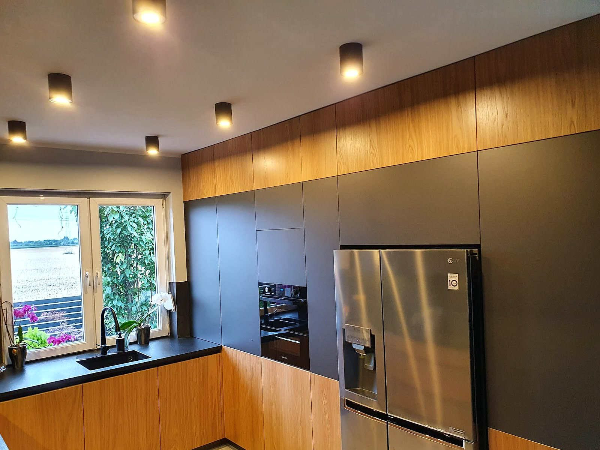
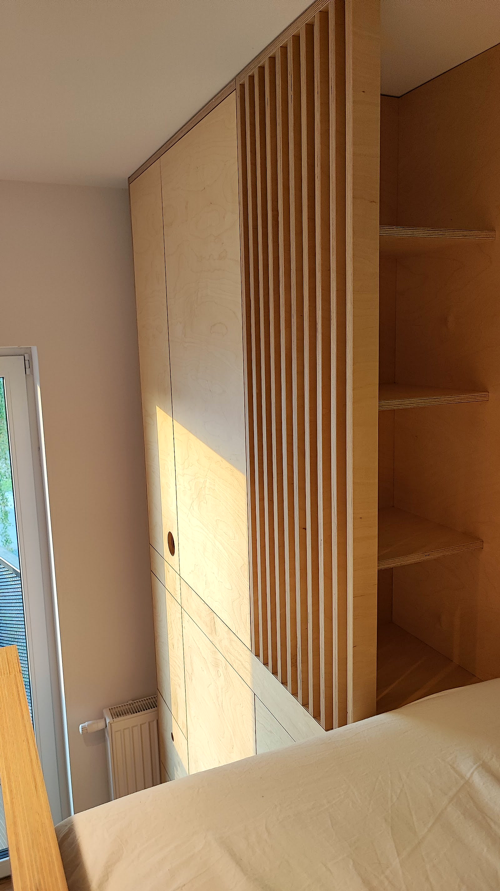
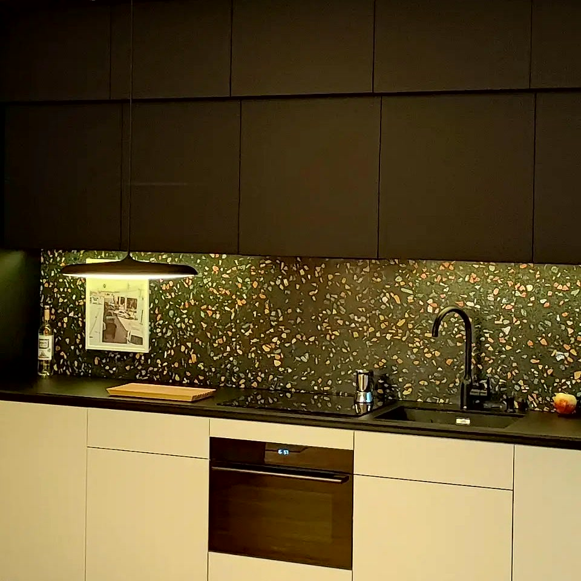
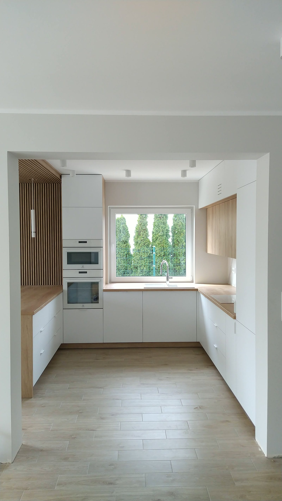
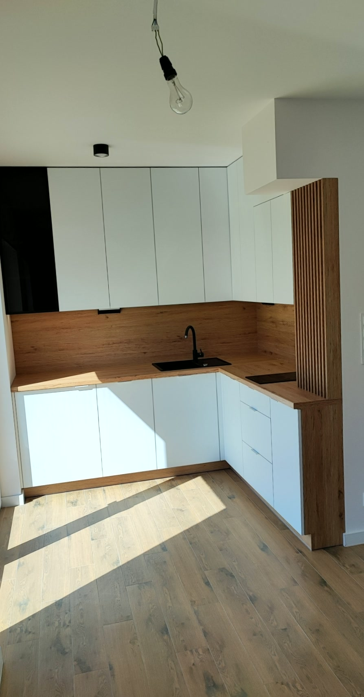
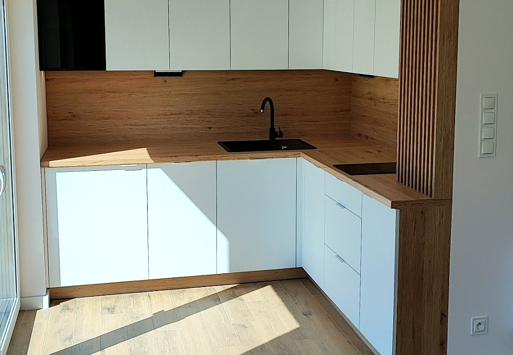
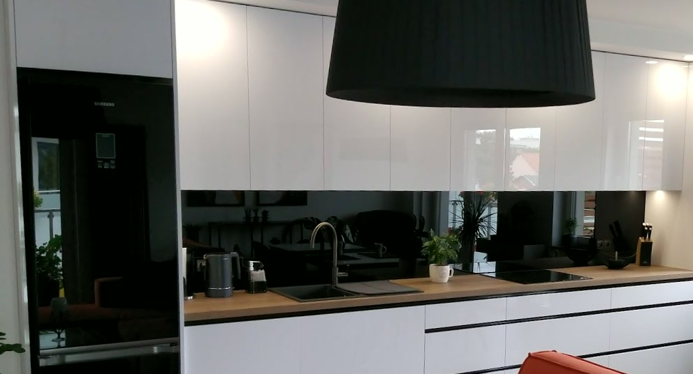

Zakład Stolarski Dorsch
Od ponad 30 lat robimy meble pod konkretne wnętrza.
Najpierw pomiar i projekt, decyzja potem. Każdy mebel docinamy pod Twoje wnętrze, także pod skos i nierówną ścianę.
Od ponad 30 lat
w Złotowie, na Domańskiego
Okucia Blum i Hettich
zawiasy i prowadnice na lata
Pomiar i projekt
zanim cokolwiek powstanie
Powiat złotowski
Złotów i okolice
Od pomiaru po montaż
jeden zakład, jeden kontakt
„Trochę długo czekam na realizację ale zamówienie wyszło perfekcyjnie.”Janusz Jotgie
„Polecam Życzliwy Gość”mietek matczak

O nas
Jak pracujemy
Korpusy i fronty docinamy pod Twoje wnętrze, okucia dajemy Blum i Hettich - to zawiasy i prowadnice pracują w meblu najciężej. Tam kończy się każda tania kuchnia.
Przy okuciach nie negocjujemy.
Poznaj nas →
Opinie
Co mówią klienci
Trochę długo czekam na realizację ale zamówienie wyszło perfekcyjnie.Janusz Jotgie
Polecam Życzliwy Gośćmietek matczak
Realizacje
Z ostatnich montaży
Zdjęcia z naszych montaży, w domach klientów - żadnych wizualizacji z katalogu. Tak te meble wyglądają na co dzień.





Współpraca
Zacznijmy od krótkiej rozmowy.
Jeden telefon wystarczy, żeby wiedzieć, na czym stoisz.